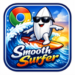

Calmer feeds
On YouTube, X, Reddit, Substack, and Hacker News: no Shorts, feed ads, trending modules, or recommendation rabbit holes.

Smooth Surfer is on
You don’t need to set anything up. Here’s what changed, plus one optional extra.
On YouTube, X, Reddit, Substack, and Hacker News: no Shorts, feed ads, trending modules, or recommendation rabbit holes.
A short countdown before those sites open. Each visit you finish today makes the next wait 1.5× longer.
Press ⌘⇧P to pin a tab. It shows up in every Chrome window, always at the page you pinned.
The AI filter hides posts that match rules in plain words, like “engagement bait” or “posts that stoke FOMO.” It starts with a few rules you can edit.
Stored only on this device. Get a key from Anthropic
Opens a setup page that checks your computer and downloads the model. It never falls back to the cloud.
Click the puzzle piece in Chrome’s toolbar, then the pin next to Smooth Surfer. Its menu shows what’s on for the site you’re visiting. And press ⌘K on any page to search this window’s tabs.